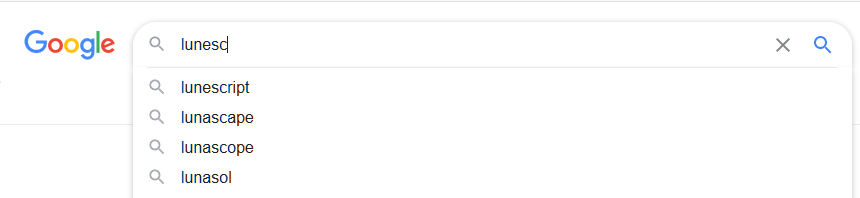
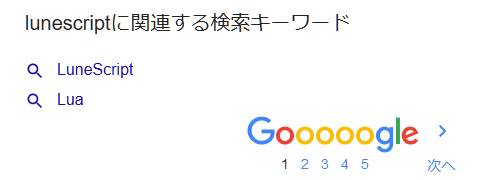

LuneScript の Google 検索ワード
先日、 Google 翻訳で lunescript が固有名詞として認識された可能性について ネタにしたが、 どうやら本当に lunescript が固有名詞として認識されたのではないかと思われる。
というのも、 google の検索バーに lunesc まで入力すると、

上のように lunescript が候補に挙げられる。
google の単語として登録されたからといって、 LuneScript の認知度が上った訳でもないが、何となく嬉しい。
なお、 lunescript を検索した際の関連ワードは次の通り。

ちゃんと lua を認識している。
念のため、次の状態で確認しているんで、 Google 検索が自分の環境にカスタマイズされているのではないと思われる。
- Cookie をクリア
- 海外 proxy を使ってアクセスする IP を変更
- Google には login していない